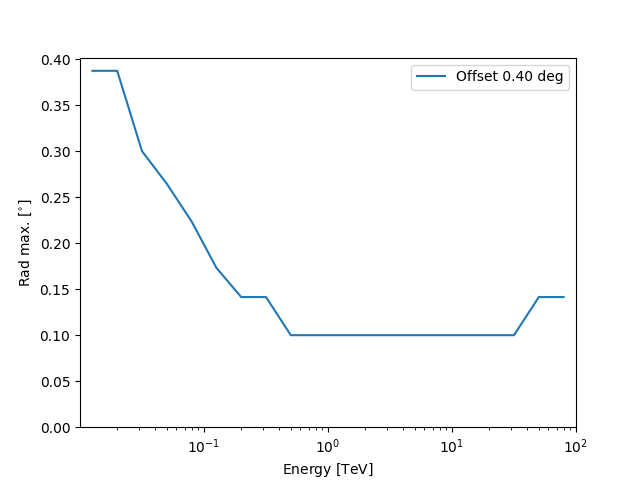

Note
Go to the end to download the full example code or to run this example in your browser via Binder
Spectral analysis with energy-dependent directional cuts#
Perform a point like spectral analysis with energy dependent offset cut.
Prerequisites#
Understanding the basic data reduction performed in the Spectral analysis tutorial.
understanding the difference between a point-like and a full-enclosure IRF.
Context#
As already explained in the Spectral analysis tutorial, the background is estimated from the field of view of the observation. In particular, the source and background events are counted within a circular ON region enclosing the source. The background to be subtracted is then estimated from one or more OFF regions with an expected background rate similar to the one in the ON region (i.e. from regions with similar acceptance).
Full-containment IRFs have no directional cut applied, when employed for a 1D analysis, it is required to apply a correction to the IRF accounting for flux leaking out of the ON region. This correction is typically obtained by integrating the PSF within the ON region.
When computing a point-like IRFs, a directional cut around the assumed source position is applied to the simulated events. For this IRF type, no PSF component is provided. The size of the ON and OFF regions used for the spectrum extraction should then reflect this cut, since a response computed within a specific region around the source is being provided.
The directional cut is typically an angular distance from the assumed source position, \(\theta\). The gamma-astro-data-format specifications offer two different ways to store this information:
if the same \(\theta\) cut is applied at all energies and offsets, a RAD_MAX keyword is added to the header of the data units containing IRF components. This should be used to define the size of the ON and OFF regions;
in case an energy-dependent (and offset-dependent) \(\theta\) cut is applied, its values are stored in additional
FITSdata unit, named RAD_MAX_2D.
Gammapy provides a class to automatically read these values,
RadMax2D, for both cases (fixed or energy-dependent
\(\theta\) cut). In this notebook we will focus on how to perform a
spectral extraction with a point-like IRF with an energy-dependent
\(\theta\) cut. We remark that in this case a
PointSkyRegion (and not a CircleSkyRegion)
should be used to define the ON region. If a geometry based on a
PointSkyRegion is fed to the spectra and the background
Makers, the latter will automatically use the values stored in the
RAD_MAX keyword / table for defining the size of the ON and OFF
regions.
Beside the definition of the ON region during the data reduction, the remaining steps are identical to the other Spectral analysis tutorial., so we will not detail the data reduction steps already presented in the other tutorial.
Objective: perform the data reduction and analysis of 2 Crab Nebula observations of MAGIC and fit the resulting datasets.
Introduction#
We load two MAGIC observations in the gammapy-data containing IRF component with a \(\theta\) cut.
We define the ON region, this time as a PointSkyRegion instead of a
CircleSkyRegion, i.e. we specify only the center of our ON region.
We create a RegionGeom adding to the region the estimated energy
axis of the SpectrumDataset object we want to
produce. The corresponding dataset maker will automatically use the
\(\theta\) values in RadMax2D to set the
appropriate ON region sizes (based on the offset on the observation and
on the estimated energy binning).
In order to define the OFF regions it is recommended to use a
WobbleRegionsFinder, that uses fixed positions for
the OFF regions. In the different estimated energy bins we will have OFF
regions centered at the same positions, but with changing size. As for
the SpectrumDatasetMaker, the ReflectedRegionsBackgroundMaker will use the
values in RadMax2D to define the sizes of the OFF
regions.
Once the datasets with the ON and OFF counts are created, we can perform a 1D likelihood fit, exactly as illustrated in the previous example.
import astropy.units as u
from astropy.coordinates import SkyCoord
from regions import PointSkyRegion
# %matplotlib inline
import matplotlib.pyplot as plt
Setup#
As usual, we’ll start with some setup …
from IPython.display import display
from gammapy.data import DataStore
from gammapy.datasets import Datasets, SpectrumDataset
from gammapy.makers import (
ReflectedRegionsBackgroundMaker,
SafeMaskMaker,
SpectrumDatasetMaker,
WobbleRegionsFinder,
)
from gammapy.maps import Map, MapAxis, RegionGeom
from gammapy.modeling import Fit
from gammapy.modeling.models import (
LogParabolaSpectralModel,
SkyModel,
create_crab_spectral_model,
)
Check setup#
from gammapy.utils.check import check_tutorials_setup
from gammapy.visualization import plot_spectrum_datasets_off_regions
check_tutorials_setup()
System:
python_executable : /home/runner/work/gammapy-docs/gammapy-docs/gammapy/.tox/build_docs/bin/python
python_version : 3.9.18
machine : x86_64
system : Linux
Gammapy package:
version : 1.2.dev644+g463b9677f
path : /home/runner/work/gammapy-docs/gammapy-docs/gammapy/.tox/build_docs/lib/python3.9/site-packages/gammapy
Other packages:
numpy : 1.26.0
scipy : 1.11.3
astropy : 5.2.2
regions : 0.7
click : 8.1.7
yaml : 6.0.1
IPython : 8.16.1
jupyterlab : not installed
matplotlib : 3.8.0
pandas : not installed
healpy : 1.16.6
iminuit : 2.24.0
sherpa : 4.15.1
naima : 0.10.0
emcee : 3.1.4
corner : 2.2.2
ray : 2.7.1
Gammapy environment variables:
GAMMAPY_DATA : /home/runner/work/gammapy-docs/gammapy-docs/gammapy-datasets/dev
Load data#
We load the two MAGIC observations of the Crab Nebula containing the
RAD_MAX_2D table.
data_store = DataStore.from_dir("$GAMMAPY_DATA/magic/rad_max/data")
observations = data_store.get_observations(required_irf="point-like")
A RadMax2D attribute, containing the RAD_MAX_2D table, is
automatically loaded in the observation. As we can see from the IRF
component axes, the table has a single offset value and 28 estimated
energy values.
rad_max = observations["5029747"].rad_max
print(rad_max)
RadMax2D
--------
axes : ['energy', 'offset']
shape : (20, 1)
ndim : 2
unit : deg
dtype : >f4
We can also plot the rad max value against the energy:
Define the ON region#
To use the RAD_MAX_2D values to define the sizes of the ON and OFF
regions it is necessary to specify the ON region as
a PointSkyRegion:
target_position = SkyCoord(ra=83.63, dec=22.01, unit="deg", frame="icrs")
on_region = PointSkyRegion(target_position)
Run data reduction chain#
We begin with the configuration of the dataset maker classes:
# true and estimated energy axes
energy_axis = MapAxis.from_energy_bounds(
50, 1e5, nbin=5, per_decade=True, unit="GeV", name="energy"
)
energy_axis_true = MapAxis.from_energy_bounds(
10, 1e5, nbin=10, per_decade=True, unit="GeV", name="energy_true"
)
# geometry defining the ON region and SpectrumDataset based on it
geom = RegionGeom.create(region=on_region, axes=[energy_axis])
dataset_empty = SpectrumDataset.create(geom=geom, energy_axis_true=energy_axis_true)
The SpectrumDataset is now based on a geometry consisting of a
single coordinate and an estimated energy axis. The
SpectrumDatasetMaker and ReflectedRegionsBackgroundMaker will
take care of producing ON and OFF with the proper sizes, automatically
adopting the \(\theta\) values in Observation.rad_max.
As explained in the introduction, we use a WobbleRegionsFinder, to
determine the OFF positions. The parameter n_off_positions specifies
the number of OFF regions to be considered.
dataset_maker = SpectrumDatasetMaker(
containment_correction=False, selection=["counts", "exposure", "edisp"]
)
# tell the background maker to use the WobbleRegionsFinder, let us use 3 off
region_finder = WobbleRegionsFinder(n_off_regions=3)
bkg_maker = ReflectedRegionsBackgroundMaker(region_finder=region_finder)
# use the energy threshold specified in the DL3 files
safe_mask_masker = SafeMaskMaker(methods=["aeff-default"])
datasets = Datasets()
# create a counts map for visualisation later...
counts = Map.create(skydir=target_position, width=3)
for observation in observations:
dataset = dataset_maker.run(
dataset_empty.copy(name=str(observation.obs_id)), observation
)
counts.fill_events(observation.events)
dataset_on_off = bkg_maker.run(dataset, observation)
dataset_on_off = safe_mask_masker.run(dataset_on_off, observation)
datasets.append(dataset_on_off)
Now we can plot the off regions and target positions on top of the counts map:
ax = counts.plot(cmap="viridis")
geom.plot_region(ax=ax, kwargs_point={"color": "k", "marker": "*"})
plot_spectrum_datasets_off_regions(ax=ax, datasets=datasets)
plt.show()
/home/runner/work/gammapy-docs/gammapy-docs/gammapy/.tox/build_docs/lib/python3.9/site-packages/gammapy/visualization/datasets.py:84: UserWarning: Setting the 'color' property will override the edgecolor or facecolor properties.
handle = Patch(**plot_kwargs)
Fit spectrum#
e_min = 80 * u.GeV
e_max = 20 * u.TeV
for dataset in datasets:
dataset.mask_fit = dataset.counts.geom.energy_mask(e_min, e_max)
spectral_model = LogParabolaSpectralModel(
amplitude=1e-12 * u.Unit("cm-2 s-1 TeV-1"),
alpha=2,
beta=0.1,
reference=1 * u.TeV,
)
model = SkyModel(spectral_model=spectral_model, name="crab")
datasets.models = [model]
fit = Fit()
result = fit.run(datasets=datasets)
# we make a copy here to compare it later
best_fit_model = model.copy()
/home/runner/work/gammapy-docs/gammapy-docs/gammapy/.tox/build_docs/lib/python3.9/site-packages/numpy/core/fromnumeric.py:88: RuntimeWarning: overflow encountered in reduce
return ufunc.reduce(obj, axis, dtype, out, **passkwargs)
Fit quality and model residuals#
We can access the results dictionary to see if the fit converged:
print(result)
OptimizeResult
backend : minuit
method : migrad
success : True
message : Optimization terminated successfully.
nfev : 213
total stat : 23.98
CovarianceResult
backend : minuit
method : hesse
success : True
message : Hesse terminated successfully.
and check the best-fit parameters
display(datasets.models.to_parameters_table())
model type name value unit ... max frozen is_norm link
----- -------- --------- ---------- -------------- ... --- ------ ------- ----
crab spectral amplitude 4.2903e-11 cm-2 s-1 TeV-1 ... nan False True
crab spectral reference 1.0000e+00 TeV ... nan True False
crab spectral alpha 2.5819e+00 ... nan False False
crab spectral beta 1.9580e-01 ... nan False False
A simple way to inspect the model residuals is using the function
plot_fit()
ax_spectrum, ax_residuals = datasets[0].plot_fit()
ax_spectrum.set_ylim(0.1, 120)
plt.show()
For more ways of assessing fit quality, please refer to the dedicated
modeling and fitting tutorial :doc:/tutorials/api/fitting` tutorial.
Compare against the literature#
Let us compare the spectrum we obtained against a previous measurement by MAGIC.
fig, ax = plt.subplots()
plot_kwargs = {
"energy_bounds": [0.08, 20] * u.TeV,
"sed_type": "e2dnde",
"yunits": u.Unit("TeV cm-2 s-1"),
"xunits": u.GeV,
"ax": ax,
}
crab_magic_lp = create_crab_spectral_model("magic_lp")
best_fit_model.spectral_model.plot(
ls="-", lw=1.5, color="crimson", label="best fit", **plot_kwargs
)
best_fit_model.spectral_model.plot_error(facecolor="crimson", alpha=0.4, **plot_kwargs)
crab_magic_lp.plot(ls="--", lw=1.5, color="k", label="MAGIC reference", **plot_kwargs)
ax.legend()
ax.set_ylim([1e-13, 1e-10])
plt.show()

Dataset simulations#
A common way to check if a fit is biased is to simulate multiple datasets with the obtained best fit model, and check the distribution of the fitted parameters. Here, we show how to perform one such simulation assuming the measured off counts provide a good distribution of the background.
dataset_simulated = datasets.stack_reduce().copy(name="simulated_ds")
simulated_model = best_fit_model.copy(name="simulated")
dataset_simulated.models = simulated_model
dataset_simulated.fake(
npred_background=dataset_simulated.counts_off * dataset_simulated.alpha
)
dataset_simulated.peek()
plt.show()
# The important thing to note here is that while this samples the on-counts, the off counts are
# not sampled. If you have multiple measurements of the off counts, they should be used.
# Alternatively, you can try to create a parametric model of the background.
result = fit.run(datasets=[dataset_simulated])
print(result.models.to_parameters_table())
# sphinx_gallery_thumbnail_number = 4

model type name value ... max frozen is_norm link
--------- -------- --------- ---------- ... --- ------ ------- ----
simulated spectral amplitude 4.1479e-11 ... nan False True
simulated spectral reference 1.0000e+00 ... nan True False
simulated spectral alpha 2.8086e+00 ... nan False False
simulated spectral beta 2.9527e-01 ... nan False False